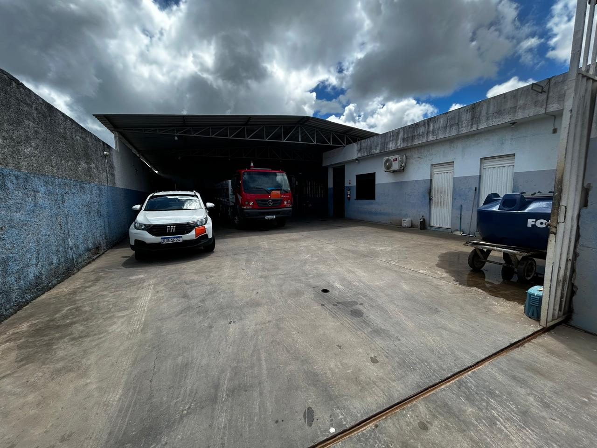
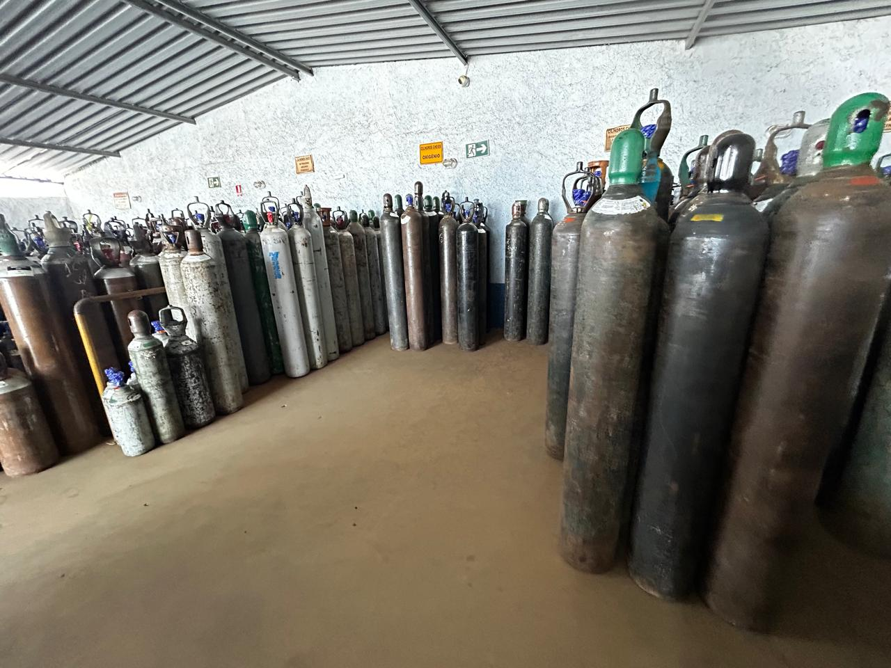
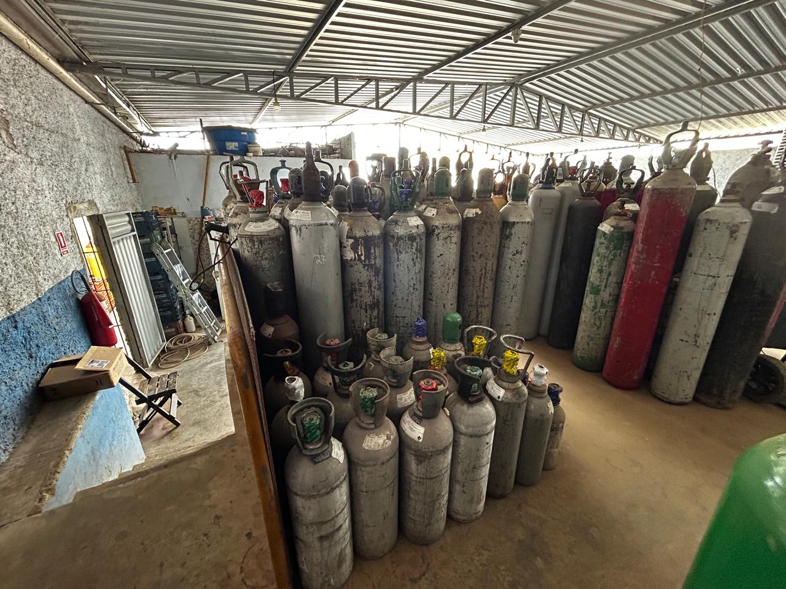
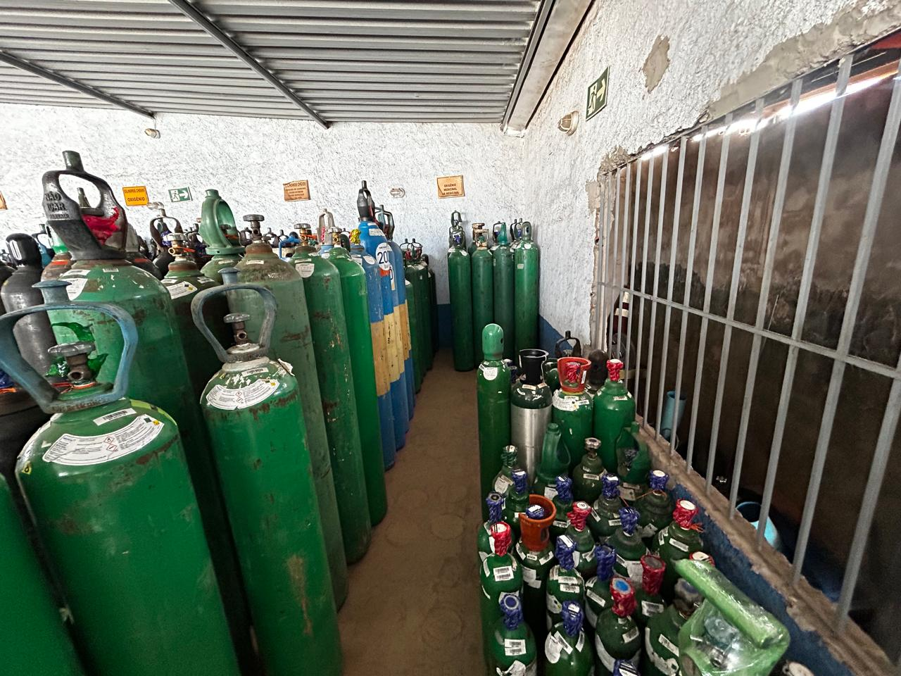
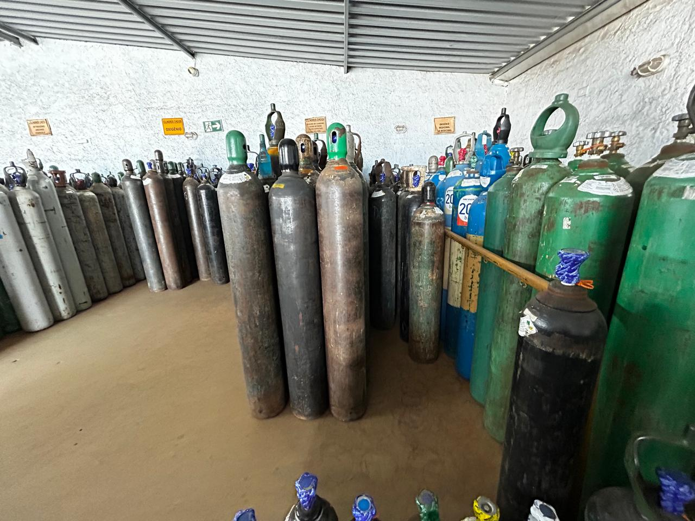
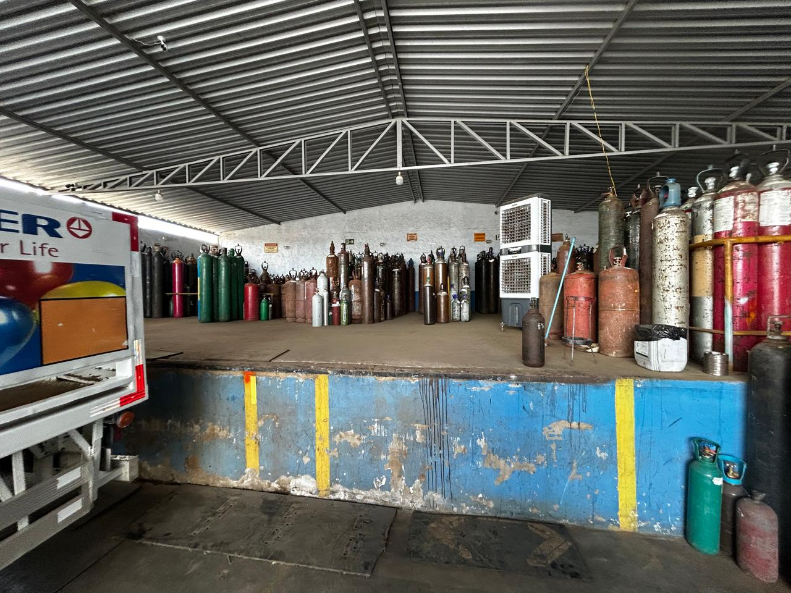

Desde 2005 fornecendo gases com qualidade, segurança e agilidade
Gases industriais e medicinais com operação preparada para atender Sergipe inteiro.
A DGL Comércio de Gases Ltda nasceu da evolução da SS Gás e hoje atua com distribuição de oxigênio industrial, acetileno, argônio, nitrogênio, hidrogênio, misturas, CO2, oxigênio medicinal e ar comprimido medicinal, com atendimento próximo e entregas ágeis em todo o estado.
Gases para solda MIG e TIG
Oxigênio industrial e medicinal
Atendimento a diversos setores

Oxigênio industrial
Acetileno
Argônio
Nitrogênio
Hidrogênio
Misturas para solda MIG
Misturas para solda TIG
CO2
Oxigênio medicinal
Ar comprimido medicinal
Oxigênio industrial
Acetileno
Argônio
Nitrogênio
Hidrogênio
Misturas para solda MIG
Misturas para solda TIG
CO2
Oxigênio medicinal
Ar comprimido medicinal
Equipe focada em orientar a escolha do gás certo para cada aplicação.
Estrutura operacional preparada para acelerar o fornecimento em Sergipe.
Compromisso contínuo com qualidade, segurança e relacionamento de longo prazo.
Parceria com a Messer reforçando padrão técnico e procedência dos gases.
Linhas atendidas
Uma operação pronta para abastecer processos industriais, soldagem e aplicações medicinais.
A DGL trabalha com gases amplamente utilizados por indústrias, oficinas, serralherias, hospitais, clínicas e operações que precisam de fornecimento confiável e reposição rápida.

Fornecimento para processos produtivos e operações técnicas
Oxigênio industrial, nitrogênio, argônio, hidrogênio e CO2 para demandas que exigem regularidade.
A estrutura da DGL atende empresas que precisam de gases com disponibilidade, suporte local e distribuição feita por uma equipe acostumada com a rotina operacional do estado.
Reposição com agilidade
Atendimento para capital e interior
Operação alinhada a diferentes setores

Linha forte para serralheria, metalurgia e corte
Acetileno, oxigênio, argônio e misturas para solda MIG e TIG em uma distribuição confiável.
Para quem procura gases para solda e corte em Sergipe, a DGL atende com variedade e apoio direto para demandas recorrentes de oficina, indústria e prestação de serviço.
Gases para solda MIG
Gases para solda TIG
Atendimento próximo para reposição contínua

Soluções para uso medicinal com padrão de cuidado e procedência
Oxigênio medicinal e ar comprimido medicinal com atendimento responsável e ágil.
A DGL também atende demandas medicinais com compromisso operacional, cuidado no fornecimento e a segurança esperada por quem precisa de abastecimento confiável.
Disponibilidade para diferentes necessidades
Distribuição autorizada Messer
Atendimento focado em confiança e rapidez
Estrutura da empresa
Estoque organizado, pátio operacional e uma rotina de distribuição pensada para responder rápido.
A DGL ampliou sua atuação ao longo dos anos e consolidou uma operação preparada para atender capital e interior com mais eficiência, apoiando clientes que não podem parar.
Ambiente preparado para trabalhar com diferentes gases e volumes conforme a aplicação.
Fluxo mais ágil para carregamento, separação e entrega dos pedidos.
Distribuição que alcança Aracaju e diversas cidades do interior sergipano.
Atendimento que valoriza confiança, resposta rápida e continuidade no fornecimento.


Trajetória da DGL
Uma empresa que cresceu unindo experiência, parceria e presença forte no estado.
A operação começou em 03 de novembro de 2005, inicialmente como SS Gás, já com foco em fornecer gases com qualidade e confiança para o mercado local.
Em 2012, José Amaral uniu-se aos sócios Ribamar e Edison, dando origem à DGL Comércio de Gases Ltda. Com essa união, a empresa ampliou sua distribuição e fortaleceu sua presença na capital e em todo Sergipe.
Tornar-se distribuidora autorizada da Messer Gases Ltda reforçou ainda mais o padrão de qualidade dos produtos oferecidos e consolidou a DGL como uma referência em atendimento, agilidade e compromisso com seus clientes.
Fundação da empresa com foco em fornecimento confiável de gases.
José Amaral, Ribamar e Edison ampliam a atuação e estruturam a nova fase da operação.
Atendimento ágil para diversos setores em Aracaju e em todo o território sergipano.
Parceria que reforça procedência, padrão técnico e confiança no abastecimento.
Cobertura estadual
Presença em Aracaju, Grande Aracaju e cidades estratégicas do interior de Sergipe.
A DGL atende clientes que pesquisam por oxigênio industrial, acetileno, argônio, nitrogênio e gases para solda em diferentes regiões do estado, mantendo uma operação pronta para responder com rapidez.
Atendimento em todo o estado de Sergipe
Capital, região metropolitana e interior com suporte comercial e operacional.
Aracaju
Nossa Senhora do Socorro
Itabaiana
Carmópolis
Lagarto
Estância
Laranjeiras
Nossa Senhora da Glória
São Cristóvão
Canindé de São Francisco
Propriá
Barra dos Coqueiros
Rosário do Catete
Neópolis
Umbaúba
Santo Amaro
Tobias Barreto
Ambiente real da operação
Imagens da estrutura, do estoque e da rotina que sustentam o atendimento da DGL.
Perguntas frequentes
Respostas rápidas para quem precisa falar com a DGL com mais segurança.
A DGL trabalha com oxigênio industrial, acetileno, argônio, nitrogênio, hidrogênio, misturas, dióxido de carbono CO2, oxigênio medicinal e ar comprimido medicinal.
Não. O atendimento alcança Aracaju, a Grande Aracaju e diversas cidades do interior, com cobertura em todo o estado de Sergipe.
Sim. A operação atende tanto aplicações industriais e de soldagem quanto fornecimento de oxigênio medicinal e ar comprimido medicinal.
O atendimento funciona de segunda a sexta, das 07h30 às 12h e das 14h às 18h.
Contato direto
Fale com a DGL e receba atendimento para sua necessidade de abastecimento.
Use o WhatsApp, o telefone ou envie uma mensagem pronta com os dados básicos do seu pedido. A equipe responde com orientação e retorno mais ágil.